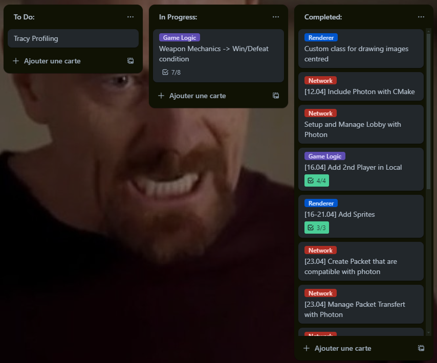
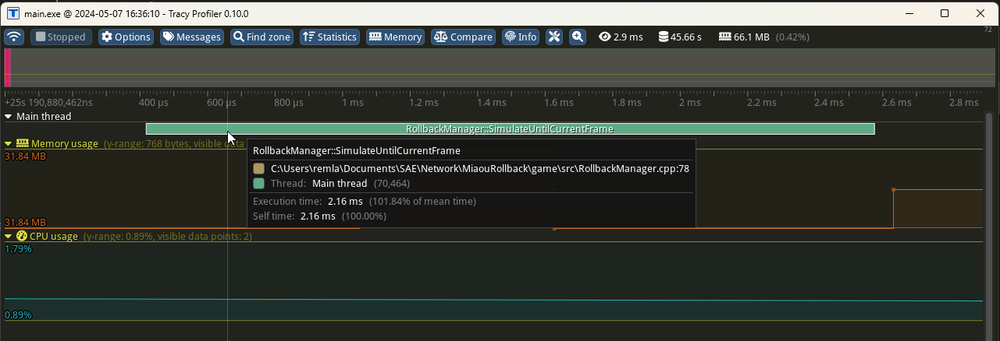
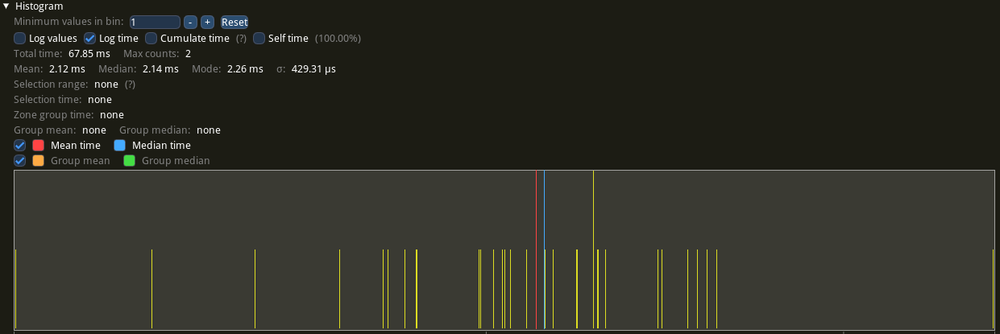

Hi, I'm [Remy Lambert](https://github.com/remlamb?tab=repositories) and this is a technical presentation of my Networking project made during my 2nd years of the game devellopement Bachelor at the SAE Geneve.
## **Introduction: **
The aim of this project was to create a real time online game in a month.
This come with a lot of system to manage and solution to find.
Like how to send custently and as fast as possible inputs between player.
Or even how to keep our simulation the same between 2 clients when we have data lost?
The solution was the big part of this projet, by implementing a rollback system for our world.
## **Preview of the Game:**
### Technical Direction:
To create a window and manage the graphics and audio, I chose the [Raylib library](https://www.raylib.com/).
I chose it partially because it's fairly popular, so you can find help and resources quite easily, and the documentation is well detailed.
But above all for its cross-platform advantage, my ultimate goal being to be able to port the game to the web using emscripten.
For the Network part of my game I use the [Photon library](https://www.photonengine.com/) .
It provides free servers, an integrated lobby system and internal management of data transfers between clients.
For the physics and collision management, I used my own engine. [the Miaou Engine](https://github.com/remlamb/MiaouEngine)
It's easier to manage the physics on my minimalist engine, but it's more than enough for a 2D game of this scale.
This simplicity is a strong point for being able to replicate the world in the rollback system.
### Game:
Here are the final render of my game.
My objective was to create a game based on versus, with a small scope but a simple dynamic and fun gameplay.
I went for a 2d game with only lateral movement, a jump and an attack.
The game distinguishes itself by this last mechanism, you can only attack downwards.
The attack is a projectile which, once on the ground, acts as a killing obstacle in the same way as in classic platformer game.
In the end, the game is a mix of platformer and versus.
## **Information about the Project:**
### Project Management:
To better manage my time and my tasks I use a trello. Split into 3 categories: To Do, In Progress and Completed.

current state of my trello
I use trello's tagging system to separate my tasks, just as I separate the different parts of my code.
I've also used the checkbox system to be more precise and make fewer tickets.
To finish with time management, I set target dates for the completion of certain tasks.
### Project Architecture:
To implement a roll-back system, you need a well-separated code structure.
The rollback must resimulate the game logic and only that logic, while the rendering must depend on the player's current state, but must not be re simulated.
To achieve this, I have this architecture:
A player manager, which manages player logic, gameplay and physics.
A game logic, which owns the player manager, and manages all the game's physics outside the players, updating gameplay and collisions.
In parallel, a Network class that manages connections and data transmission with Photon.
An InputFrame class to manage inputs, frame and gameplay information, to be sent to the client and managed by the rollback manager.
A Rollback Manager to manage confirmed frames and resimulate the world with inputs.
There are also renderers, one for displaying game features and another for managing audio.
All these elements are grouped together in the GameApp, which creates the window and updates all the logic.
## **Technical Implementation:**
### Local Gameplay:
I started by implementing the gameplay basics just to see how the game would feel.
I started with the movements and positions of the platforms, the level seemed a bit empty so I added the ropes.
Once the player manager was coherent, I implemented the 2 players playable on a single application so I could find the first gameplay or logic bugs that would have been harder to debug with two online clients .
Then I managed the input system.
### Inputs Manager:
To manage inputs and send them, I use a custom class:
I store inputs with flags using bitwise left shift,
~~~~~~~~~~~~~~~~~~~~~~~~~~~~~~~~~
namespace Input {
/**
* @brief Represents input flags for various actions in the game.
*/
constexpr std::uint8_t kJump = 1 << 0; // Flag for jump action.
constexpr std::uint8_t kRight = 1 << 1; // Flag for moving right.
constexpr std::uint8_t kLeft = 1 << 2; // Flag for moving left.
constexpr std::uint8_t kAttack = 1 << 3; // Flag for attacking.
~~~~~~~~~~~~~~~~~~~~~~~~~~~~~~~~~
And I update the inputs for each frame with this function
~~~~~~~~~~~~~~~~~~~~~~~~~~~~~~~~~
void Input::FrameInput::UpdatePlayerInputs() {
input = 0;
if (IsKeyDown(KEY_SPACE) ||
IsGamepadButtonDown(0, GAMEPAD_BUTTON_RIGHT_FACE_DOWN) ||
IsKeyDown(KEY_W) || IsGamepadButtonDown(0, GAMEPAD_BUTTON_LEFT_FACE_UP)) {
input |= static_cast(Input::kJump);
}
if (IsKeyDown(KEY_D) ||
IsGamepadButtonDown(0, GAMEPAD_BUTTON_LEFT_FACE_RIGHT)) {
input |= static_cast(Input::kRight);
}
if (IsKeyDown(KEY_A) ||
IsGamepadButtonDown(0, GAMEPAD_BUTTON_LEFT_FACE_LEFT)) {
input |= static_cast(Input::kLeft);
}
if (IsKeyDown(KEY_S) ||
IsGamepadButtonDown(0, GAMEPAD_BUTTON_RIGHT_FACE_LEFT) ||
IsGamepadButtonDown(0, GAMEPAD_BUTTON_LEFT_FACE_DOWN) || IsKeyDown(KEY_LEFT_ALT)) {
input |= static_cast(Input::kAttack);
}
}
~~~~~~~~~~~~~~~~~~~~~~~~~~~~~~~~~
I use the bitwise OR operator to define the correspondence between actions and keyboard or joystick inputs.
this method reduces the size of packet to be sent to communicate inputs
### Networking:
For the network side, I use the classes and listener events given by photon.
~~~~~~~~~~~~~~~~~~~~~~~~~~~~~~~~~
class NetworkLogic : private ExitGames::LoadBalancing::Listener {
public:
NetworkLogic(const ExitGames::Common::JString& appID,
const ExitGames::Common::JString& appVersion,
game::GameLogic* game_logic);
void Connect(); /* Connects the client to the server. */
void Disconnect(); /* Disconnects the client from the server. */
void Run(); /* Runs the network loop for handling events and operations. */
void CreateRoom(const ExitGames::Common::JString& roomName, nByte maxPlayers);
void JoinRandomRoom(
ExitGames::Common::Hashtable expectedCustomRoomProperties =
ExitGames::Common::Hashtable());
void JoinRandomOrCreateRoom() noexcept;
void RaiseEvent(bool reliable, EventCode event_code,
const ExitGames::Common::Hashtable& event_data) noexcept;
void ReceiveEvent(int player_nr, EventCode event_code,
const ExitGames::Common::Hashtable& event_content) noexcept;
private:
ExitGames::LoadBalancing::Client
mLoadBalancingClient; /* The LoadBalancing client instance. */
ExitGames::Common::Logger mLogger; /* Logger instance for debug messages. */
game::GameLogic* game_logic_; /* Pointer to the game logic object. */
// Listener callbacks
void debugReturn(int debugLevel,
const ExitGames::Common::JString& string) override;
void connectionErrorReturn(int errorCode) override;
void clientErrorReturn(int errorCode) override;
void warningReturn(int warningCode) override;
void serverErrorReturn(int errorCode) override;
void joinRoomEventAction(
int playerNr, const ExitGames::Common::JVector& playernrs,
const ExitGames::LoadBalancing::Player& player) override;
void leaveRoomEventAction(int playerNr, bool isInactive) override;
void customEventAction(
int playerNr, nByte eventCode,
const ExitGames::Common::Object& eventContent) override;
void connectReturn(int errorCode,
const ExitGames::Common::JString& errorString,
const ExitGames::Common::JString& region,
const ExitGames::Common::JString& cluster) override;
void disconnectReturn() override;
void leaveRoomReturn(int errorCode,
const ExitGames::Common::JString& errorString) override;
~~~~~~~~~~~~~~~~~~~~~~~~~~~~~~~~~
Thanks to the JoinRandomOrCreateRoom class, Photon joins the current client to a pre-existing room or creates a new one, giving you control over the maximum number of players per room.
That's how I manage my games.
Raise and ReceiveEvent are the classes that handle data transfer between clients. They need to be serialized as photon needs them, here using event code and Hashtable.
### Rollback:
For rollback, we need a current frame, that's the current game frame of your client, And a confirm frame.
The confirm frame is the last frame validated by the manager as being identical on the 2 clients.
By default, I set it to -1 because the first game frame must not be a confirmed frame.
~~~~~~~~~~~~~~~~~~~~~~~~~~~~~~~~~
int RollbackManager::ConfirmFrame() noexcept {
for (int player_id = 0; player_id < game::max_player;
player_id++) {
const auto input = inputs_[player_id][frame_to_confirm_];
confirmed_game_manager_.SetPlayerInput(input, player_id);
}
confirmed_game_manager_.UpdateGameplay();
const auto checksum = confirmed_game_manager_.ComputeChecksum();
confirmed_frame_++;
frame_to_confirm_++;
return checksum;
}
~~~~~~~~~~~~~~~~~~~~~~~~~~~~~~~~~
When the inputs are sent, if there are any losses, the current frame cannot become a confirm frame, as the two simulations are no longer identical.
The game must then be resimulated for the number of lost frames, to do this, the inputs are stored until the next input is sent and validated.
~~~~~~~~~~~~~~~~~~~~~~~~~~~~~~~~~
void RollbackManager::SimulateUntilCurrentFrame() const noexcept {
#ifdef TRACY_ENABLE
ZoneScoped;
#endif
current_game_manager_->Rollback(confirmed_game_manager_);
for (short frame = static_cast(confirmed_frame_ + 1);
frame < current_frame_; frame++) {
for (int player_id = 0; player_id < game::max_player;
player_id++) {
const auto input = inputs_[player_id][frame];
current_game_manager_->SetPlayerInput(input, player_id);
}
current_game_manager_->UpdateGameplay();
}
}
~~~~~~~~~~~~~~~~~~~~~~~~~~~~~~~~~

profiling example of the function that resimulates the world, we can see that it already takes 2.16ms which is already quite expensive for a game of this scope.

The statistics of the same function during a test. Not a real game, but a shorter situation.
Resimulation takes around 2ms over a 2-3 minute session with a low rate of change
To compare the synchronisation of the two instances of the world, we use a checksum.
In this case, we add together players values, in particular their position and velocity. I also add the current input.
If the checksum is not equal on the 2 clients, this means that the simulation is no longer identical.
~~~~~~~~~~~~~~~~~~~~~~~~~~~~~~~~~
int GameLogic::ComputeChecksum() {
int checksum = 0;
int it = 0;
for (const auto& player : player_manager.players) {
auto& body = world_.GetBody(player_manager.players_BodyRefs_[it]);
auto& pos = body.Position();
const auto* pos_ptr = reinterpret_cast(&pos);
// Add position
for (size_t i = 0; i < sizeof(Math::Vec2F) / sizeof(int); i++) {
checksum += pos_ptr[i];
}
// Add velocity
const auto& velocity = body.Velocity();
const auto* velocity_ptr = reinterpret_cast(&velocity);
for (size_t i = 0; i < sizeof(Math::Vec2F) / sizeof(int); i++) {
checksum += velocity_ptr[i];
}
// Add input.
checksum += player.input;
it++;
}
return checksum;
}
~~~~~~~~~~~~~~~~~~~~~~~~~~~~~~~~~
## **Conclusion:**
First of all, thank you for reading.
As mentioned earlier, the next stage of the project is the web port, to make the game easier to play.
Otherwise the rollback system is a very powerful tool for keeping the simulation identical in the event of data loss. It's a good solution for a project of this scale, but may be too expensive for larger projects.
[Link to the Project Documentation](DocRollback/html/index.html)